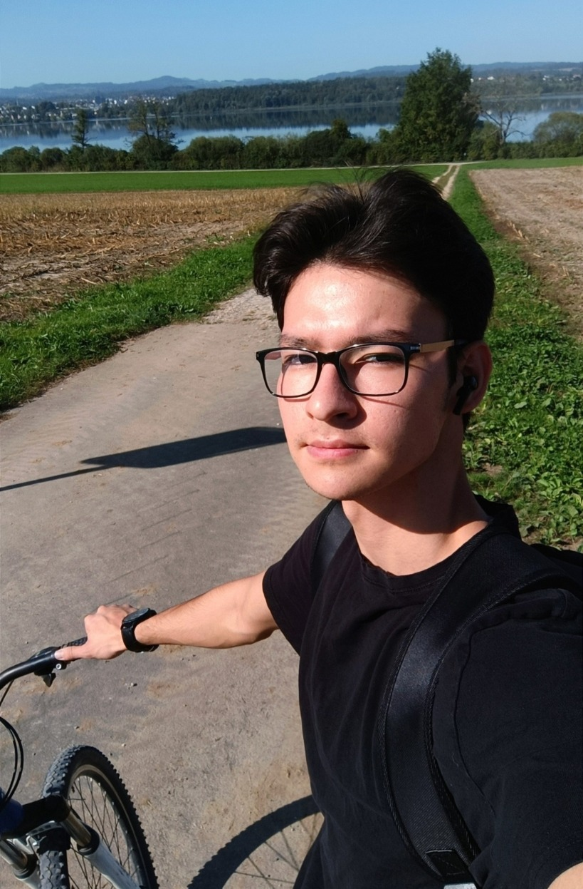

Schön, dass Sie hier sind! Ich heisse Ali, bin 19 und komme aus Afghanistan. Ich bin im Iran geboren und aufgewachsen, habe aber auch in Afghanistan gelebt. 2023 kam ich mit meiner Mutter in die Schweiz und wohne seitdem in Zürich. Zu meinen Freizeitbeschäftigungen gehören Fitness, Fotografieren und das Lernen über IT.

Ich habe Technik geliebt, als ich ein Kind war. Ich schaue immer gerne Tech Youtube-Videos und lerne mehr darüber mit Freude. Egal um welchem Bereich es sich handelt, solange es sich auf Tech bezieht, bin ich durstig zum Lernen. Auf diesem Grund weiss ich relativ viel über allgemeine Tech wie PCs, Handys, Laptops, Kameras usw... Meine Leidenschaft hört aber nicht bei der Hardware auf. Ich interessiere mich auch für Software, hauptsächlich seit ich in die Schweiz gekommen bin und meinen ersten Laptop gekauft habe. Erst dann konnte ich das Programmieren selbst ausprobieren und einen Vorgeschmack darauf bekommen. Ich wusste dann, was ich beruflich machen möchte.
Der Weg zum Informatiker ist aber dornig. Ich musste zuerst mein Deutsch verbesseren, und gleichzeitig viel Programmierungserfahrung sammeln, und genau das habe ich gemacht. An verschiedenen IT-Kursen habe ich teilgenommen und zudem auch zu Hause gelernt, um meine Kenntnisse zu vertiefen. An der Fachschule Viventa habe ich mich auf die Sekundarabschlussprüfung für Erwachsene vorbereitet und mein Sek A Abschlusszeugnis mit sehr guten Noten habe ich am 3. Dezember 2025 erhalten. Zurzeit besuche ich weiter die Fachschule Viventa (BVJ Technik und Informatik), wo ich Informatik, Mathe, Deutsch und andere verschiedene Technische und Schulfächer lerne. Zu guter Letzt habe ich dieses Jahr die BMS-Prüfung bestanden, was es mir ermöglicht, während meiner Lehrstelle die Berufsmaturitätsschule zu besuchen.